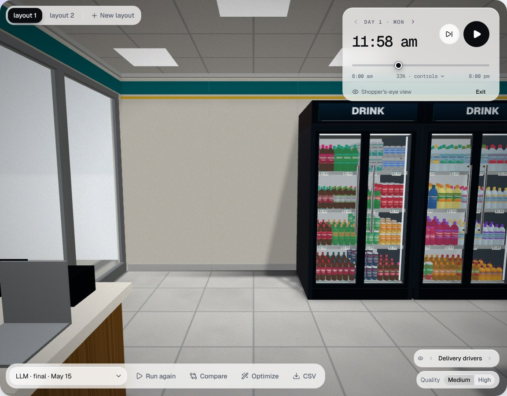
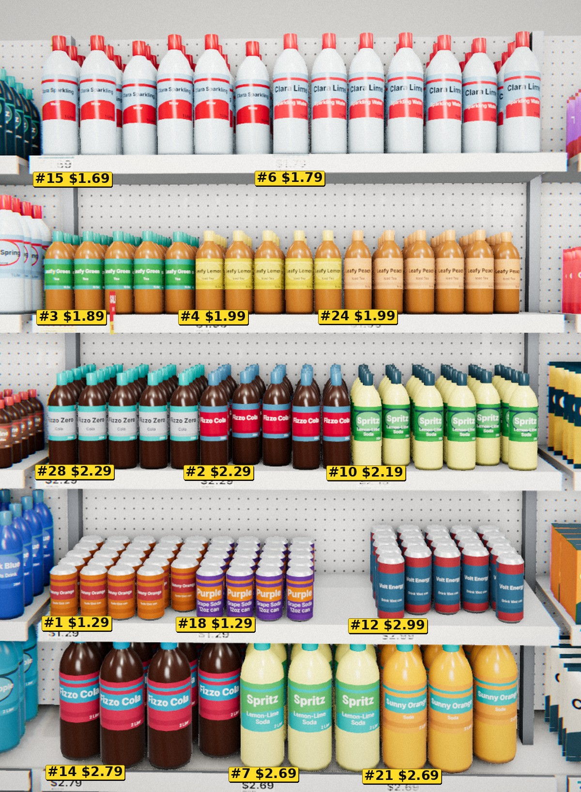

Glance
The face is rendered with prices, promotion ribbons and numbered tags — or replaced by a real photo of the shelf.
Walk
Plan items resolve to SKUs by name, then category; the route visits their racks and passes others on the way.
At the door
Reads the situation and where it came from; writes its mission, then decides whether to enter and what to buy.
Judge
Names the most eye-catching product by its tag and how tempting it is, given persona, basket and plan.
Seeded draw
P(buy) grows with interest, the plan and the budget left. Same seed per shopper and shelf across layouts.
Checkout & log
Basket, spend, path, every glance with its image hash, tokens and cost — the 3D playback and dashboards read this.
Korean-tuned prompt bodies, English outputs; grammar-constrained JSON on local servers keeps tiny models fast.
Every stimulus and call is seeded and cached by prompt — reruns are free and exact.